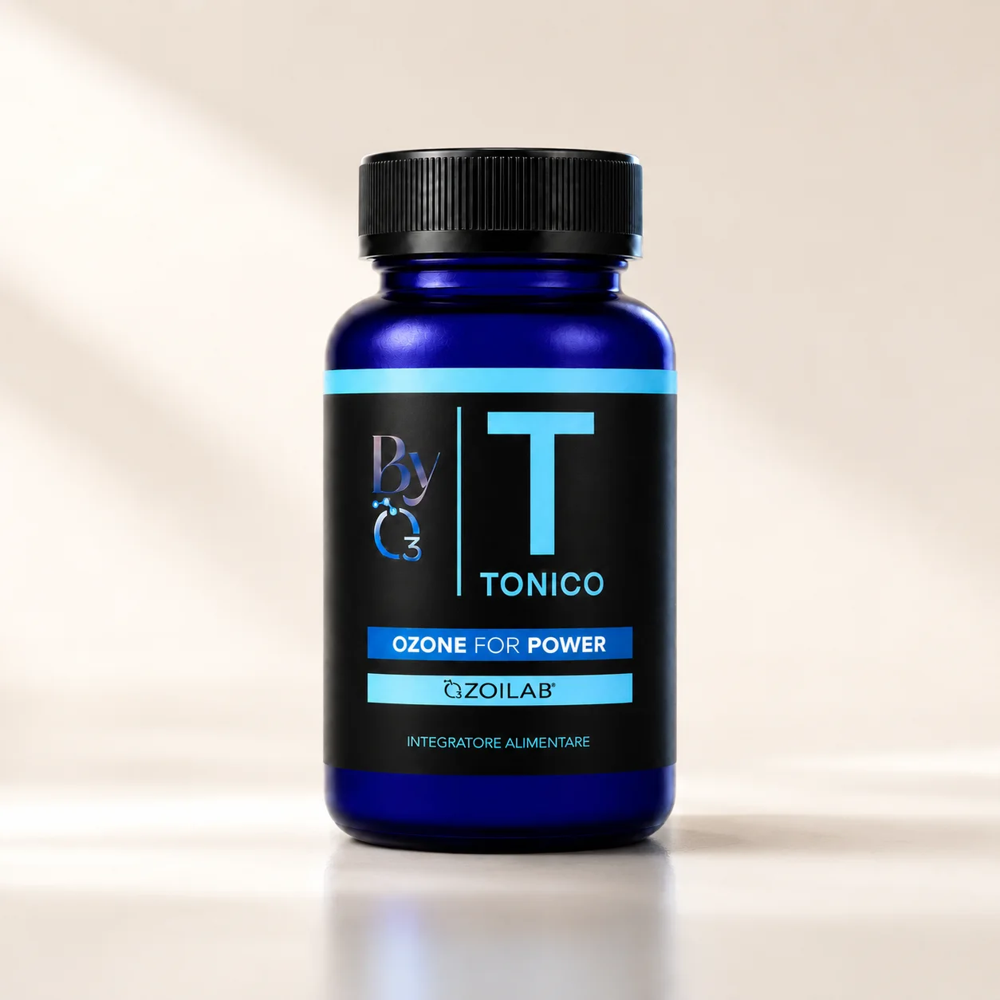
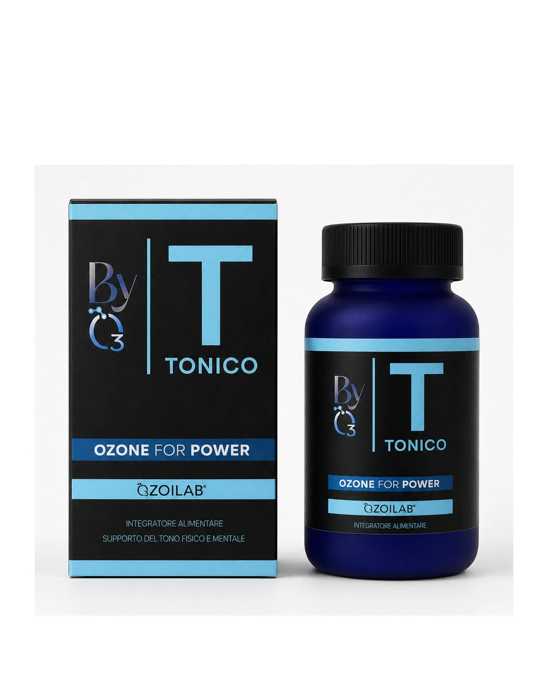
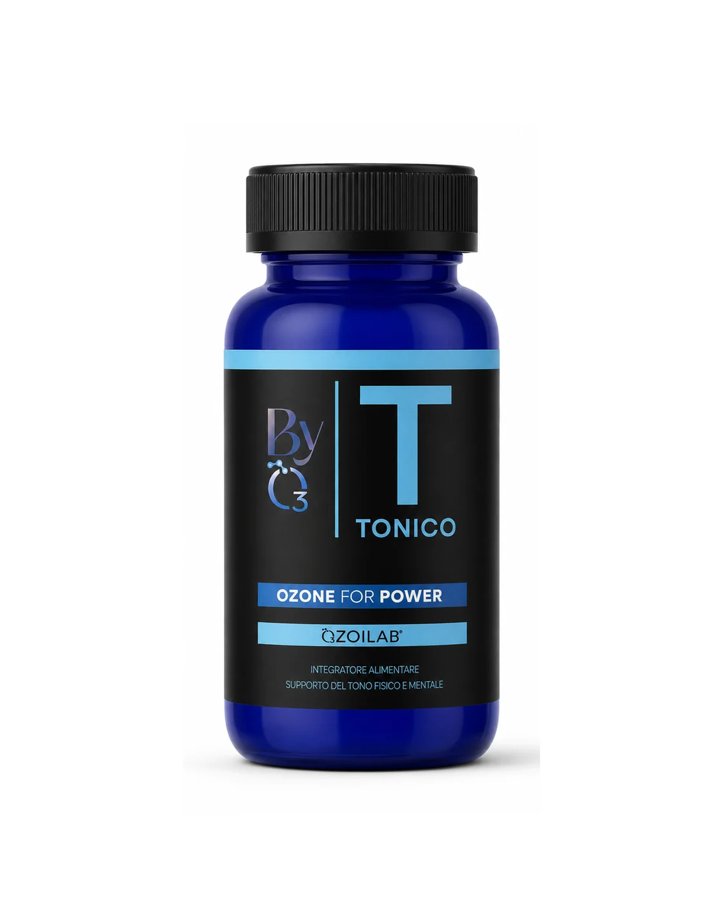

Attivi tonici
Muira Puama, Damiana e Guaranà sostengono la routine nei periodi intensi.



Ozone for Power
Una formula quotidiana per accompagnare i periodi di stanchezza, i cambi di stagione e le giornate in cui serve più costanza.
Muira Puama, Damiana e Guaranà sostengono la routine nei periodi intensi.
Olio di girasole ozonizzato e stabilizzato, ingrediente-firma della linea.
L-Glutatione ridotto SETRIA® e Taurina completano la formula.
Una routine da due capsule al giorno, pensata per la costanza.
Tonico combina OZOILAB® con estratti vegetali e attivi scelti per sostenere tono fisico e mentale.
BYO3 evita la logica della spinta rapida: la formula nasce intorno a OZOILAB® e a una routine quotidiana leggibile.
Leggere sempre l'etichetta. In caso di terapie in corso, gravidanza, allattamento o dubbi specifici, chiedere un parere professionale.
Assumere preferibilmente al mattino, con o senza cibo.
Una confezione contiene circa 30 giorni di assunzione regolare.
Non indicato in caso di deficit G6PD/favismo. Contiene caffeina.